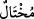
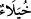
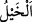

Feryâd etme eğer elinden çıkarsa
Büyüklerin makbûl öğütlerini hatırla yâd et
Ancak böyle ma‘mûr olur din ve diyânet
Bu âyet-i kerîmenin amacı, Allah’a teslim olmayı engelleyen üzüntü ile büyüklenmeye
ve böbürlenmeye götüren sevinci ortadan kaldırmaktır. Bu nedenle peşinden şöyle
buyrulmuştur:
“Çünkü Allah kendini beğenip böbürlenen kimseleri sevmez.” Zira dünya hazlarıyla
sevinen ve kendince değer veren mutlaka onlarla övünüp böbürlenir. Âyette geçen “
” kelimesi kibirli ve kendini beğenen kimse demek olup
’dan gelir. Kendini
beğenmek, büyüklenmek demektir. İnsanın kendisinde bir üstünlük var olduğunu
düşünerek kendini üstün saymasından doğan bir kibirdir. Ata binen hiç kimse yoktur ki,
nefsinde kibir görmesin, dendiğinden dolayı at anlamındaki
kelimesi de buradan
alınmıştır. Farsça ifâdesiyle Allah Teâlâ dünya nimetleriyle övünen, dünya malının
çokluğuyla sevinip, onunla emsâl ve arkadaşlarıyla çekişen hiçbir kibirli kimseyi
sevmez.
Bahru’l-‘ulûm adlı eserde şöyle denilmiştir: Muhtâl, kibir ve gurur sâhibi kimse
demek olup umûmîdir. Ancak Peygamberimiz’in (s.a.) şu hadîs-i şerîfi, kelimenin
mânâsının husûsî olduğunun delilidir:
“Muhakkak Allah’ın sevdiği ve buğz ettiği kibir vardır. Sevdiği kibir, sadaka
vermekte olduğu sırada duyduğu sevinç ve düşmanla karşılaştığında duyduğu kibir ve
güvendir. Buğz ettiği kibir ise, günah ve azgınlıktaki umursamazlıktır.” Yâni Allah,
kendisine verilen dünyalıkla büyüklenen ve insanlara karşı böbürlenen hiçbir kimseyi
sevmez.
Belâgatçılardan biri büyüklenen kimseyi şöyle tasvir etmiştir: Sanki kisrâ (İran
hükümdarı) semerinin örtüsünü taşıyor! Sanki Karun nafakasına vekil olmuş! Sanki
Belkıs çocuklarının dadılarından birisiymiş! Sanki Yusuf (a.s.) gözünün karasından
başka bir yere bakmamış! Sanki Lokman onun hikmetinden başka bir şey konuşmamış!
Sanki yeşillikler onun için gölge ve çiçeklerin her çeşidi onun için dikilmiş!
Âyet-i kerîmede, şımarıklığa varan sevinç ve taşkınlığın yasaklanmasına âyetin son
kısmının tahsis edilmesi bu durumun üzülmekten daha kötü olduğunu bildirmektedir.
Ayrıca âyet-i kerîmede, insanın sevinç ve üzüntü hallerinde değişmemesi gerektiğine de
bir işâret vardır. İlle de sevinmesi gerekiyorsa, kibirlenmek ve şımarmak için değil,
Allah’ın ihsânından dolayı şükür için sevinmelidir. Üzülmesi kaçınılmaz ise, O’nun
kazâsına sabrederek üzülmeli gönül darlığından üzülmemelidir.
Kuteybe b. Saîd demiştir ki; Arap kabilelerinden birinin yurduna girdim. Bir de
baktım ki, bir alan sayısız ölü develerle dolmuş. Bir tepenin üzerinde de birinin yün
eğirdiğini gördüm ve bu durumun ne olduğunu sordum. Cevab olarak: “Bu develer
benimdi, ama onları bana veren şimdi geri aldı.” dedi ve şu şiiri söyledi: